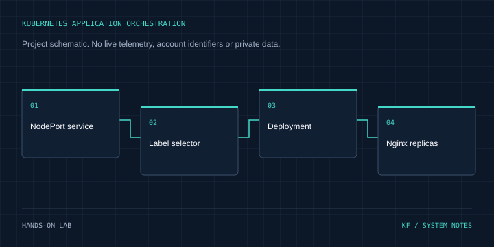

03 / CLOUD & DEVOPS / CASE STUDY
Kubernetes Application Orchestration
Declarative replicas, resource budgets and service discovery for a containerized web workload.
Hands-on lab Inspect source on GitHub ↗
Architecture
NodePort service → Label selector → Deployment → Nginx replicas
Problem & context
A single manually started container has no declarative replica count or stable service abstraction.
Objectives
Practice Kubernetes workload management using a Deployment and a matching Service.
My role & project work
Authored Kubernetes manifests for an Nginx deployment with three replicas, resource requests/limits and a NodePort service.
Technical implementation
deployment.yaml specifies three nginx:alpine replicas, CPU/memory requests and limits, and consistent app labels. service.yaml uses those labels to target port 80 and expose NodePort 30080.
Engineering decisions
Separate workload and service definitions so pods can be replaced without changing the service contract. Declare resource requests and limits instead of leaving resource use implicit.
Challenges & solutions
Workload labels and service selectors must match for traffic to reach the pods. The manifests do not include HPA or readiness/liveness probes; those are next steps rather than implemented claims.
Testing & verification
Reviewed deployment.yaml and service.yaml at revision 9ce9ef918c085f98d1cd99332271618b90933ed2, alongside the repository's lab documentation and screenshot inventory. No cluster was started or mutated in this portfolio task.
Current status
Declarative Kubernetes lab. Three configured replicas are a manifest setting, not a claim of measured live capacity or availability.
Lessons & next steps
A useful orchestration example makes replicas, routing and resource budgets explicit. Probe behavior and failure recovery need their own reproducible tests.